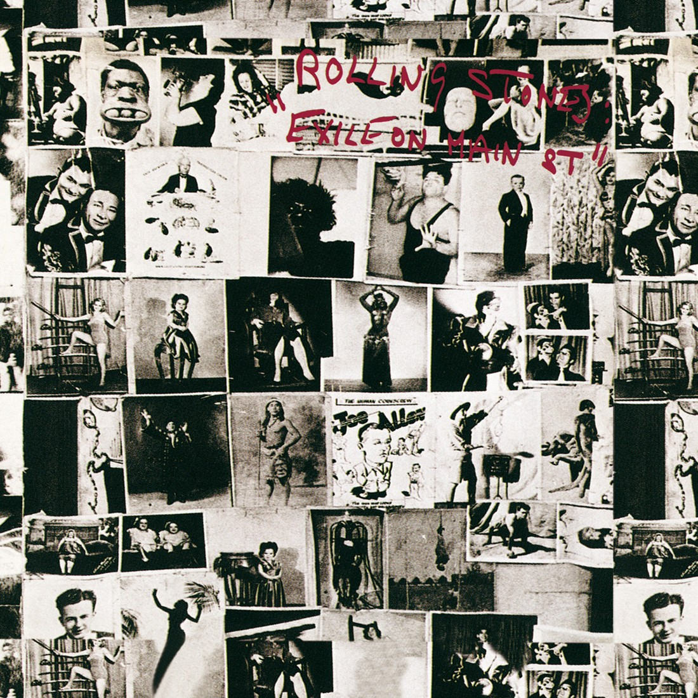

Exile on Main St. —en español: Exilio en la Calle Principal— es el décimo en el Reino Unido y duodécimo en los Estados Unidos álbum de estudio de la banda de rock británico The Rolling Stones, publicado en el año 1972. Este se comenzó a grabar a mediados de julio de 1971 en una casa que el guitarrista Keith Richards alquiló en el sur de Francia después de que la banda decidiera marcharse de Inglaterra por graves problemas con el fisco. Además, Richards comenzó a consumir grandes cantidades de droga hasta el punto de que se mantenía varios días despierto, haciendo que los Stones tuvieran grandes dificultades para concentrarse.1 La producción, encabezada por el estadounidense Jimmy Miller, cuarta consecutiva y penúltima con el grupo, se finalizó en Los Ángeles, California, en marzo del siguiente año. Salió al mercado como un doble LP (el disco más largo de la banda) el 12 de mayo bajo el sello discográfico de la banda Rolling Stones Records, y distribuido en Norteamérica por Atlantic Records.
